/ 01
Medicina do emagrecimento
Investigação metabólica completa, plano terapêutico individualizado e — quando indicado — uso criterioso de medicações modernas (incluindo GLP-1). Resultado durável, sem efeito sanfona.
Acompanhamento médico individualizado em medicina do emagrecimento — para quem quer perder peso com segurança, melhorar exames e construir uma rotina que se sustenta.
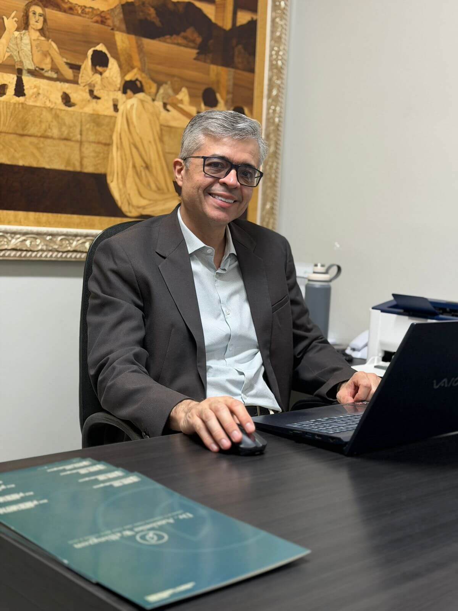
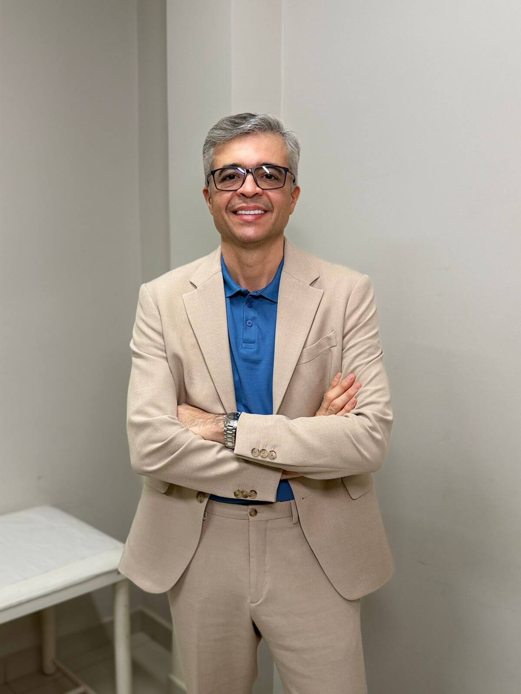
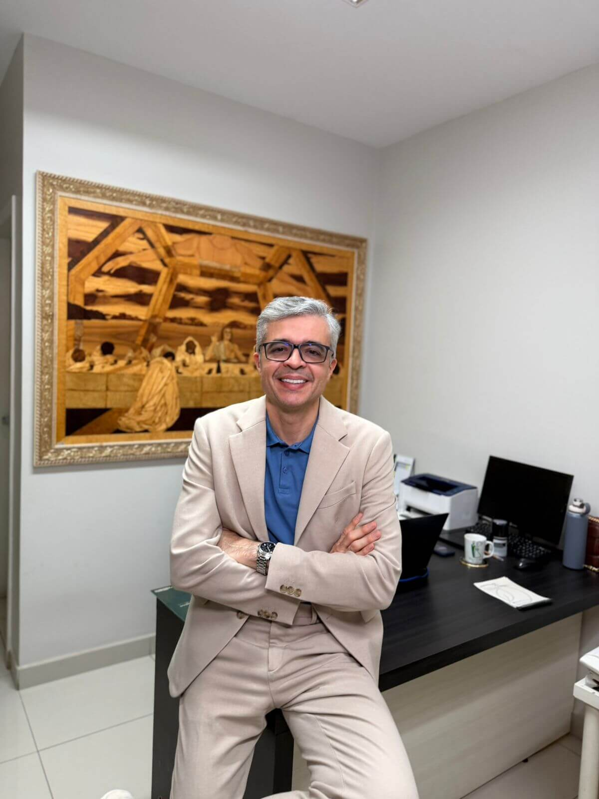
01 / 03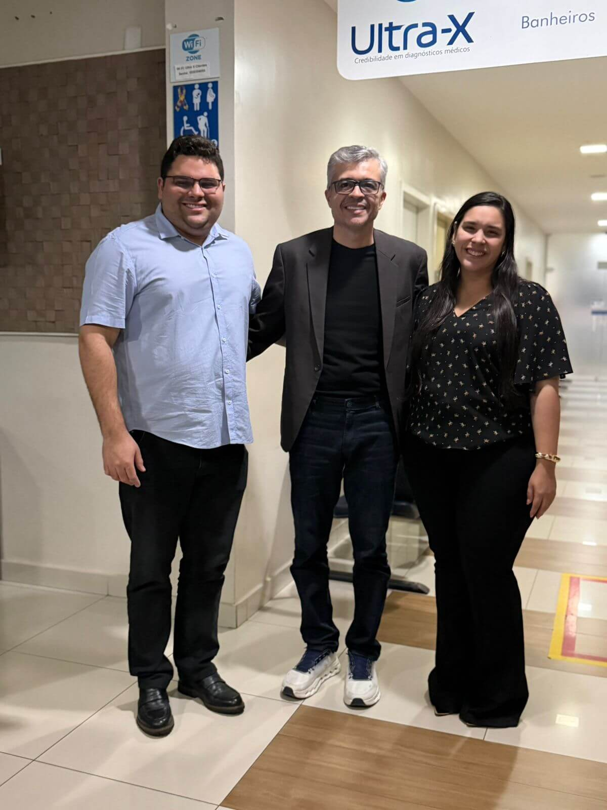
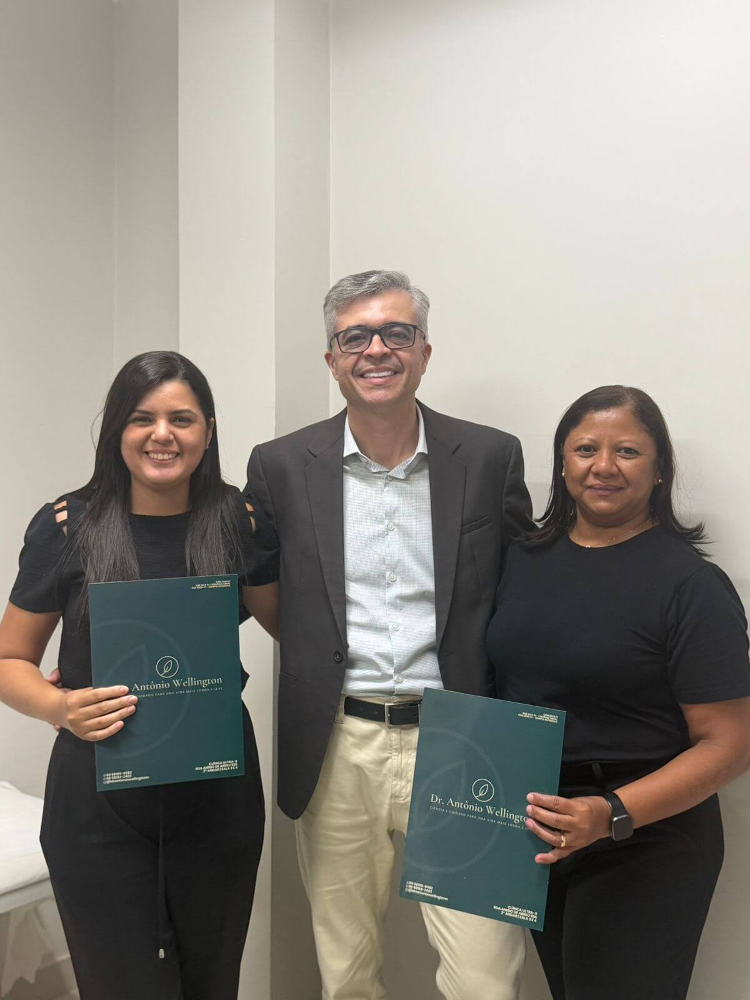
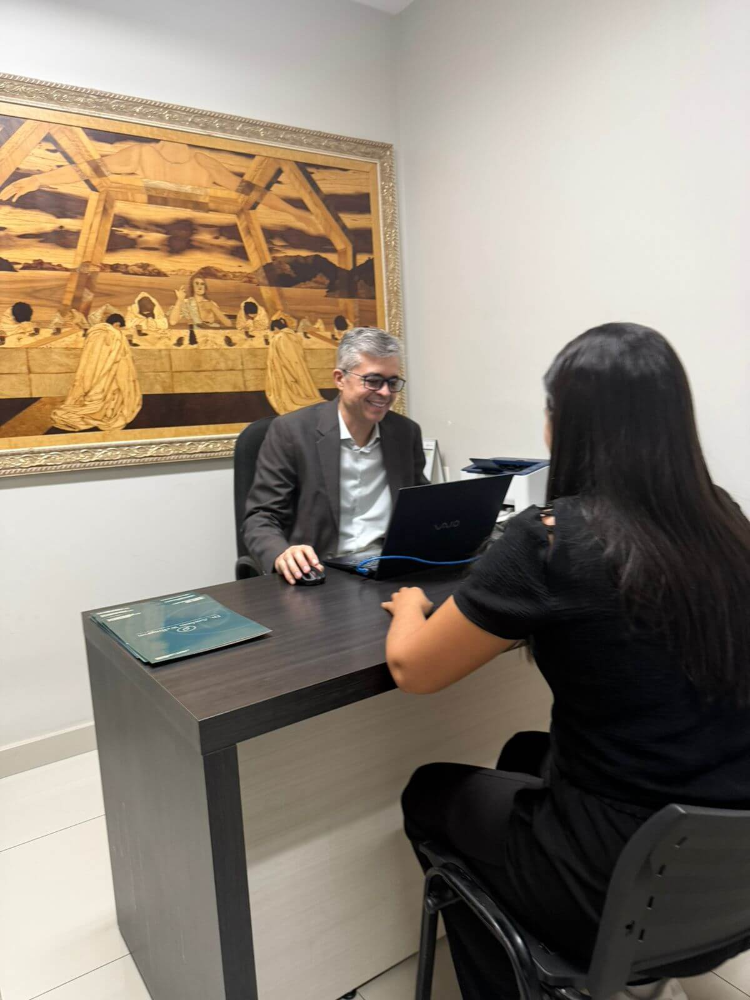
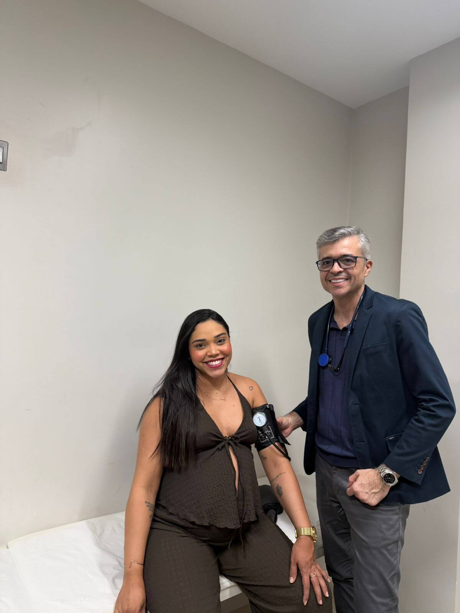
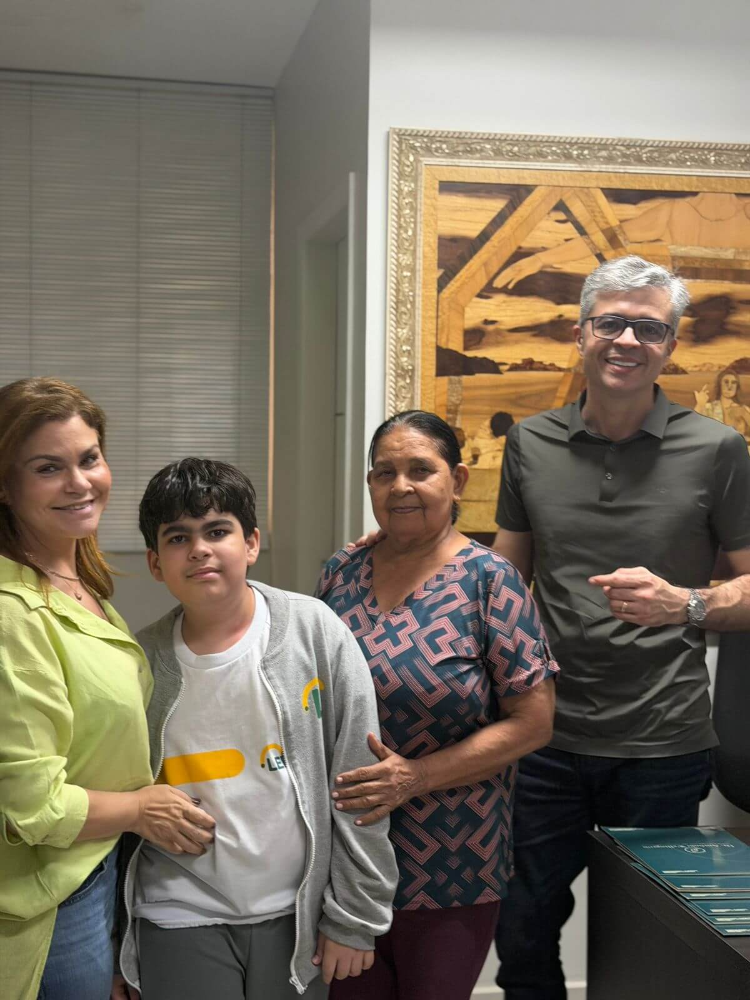
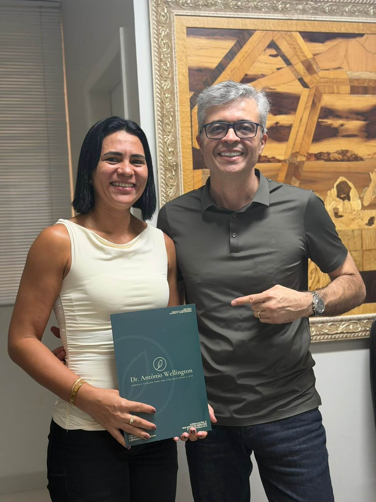
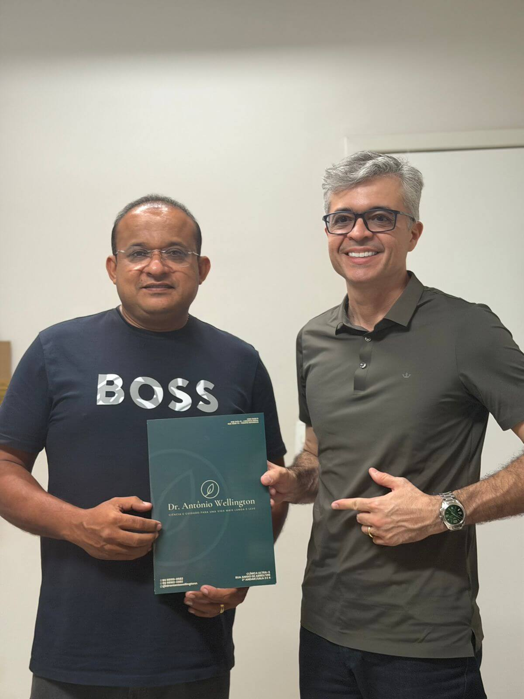
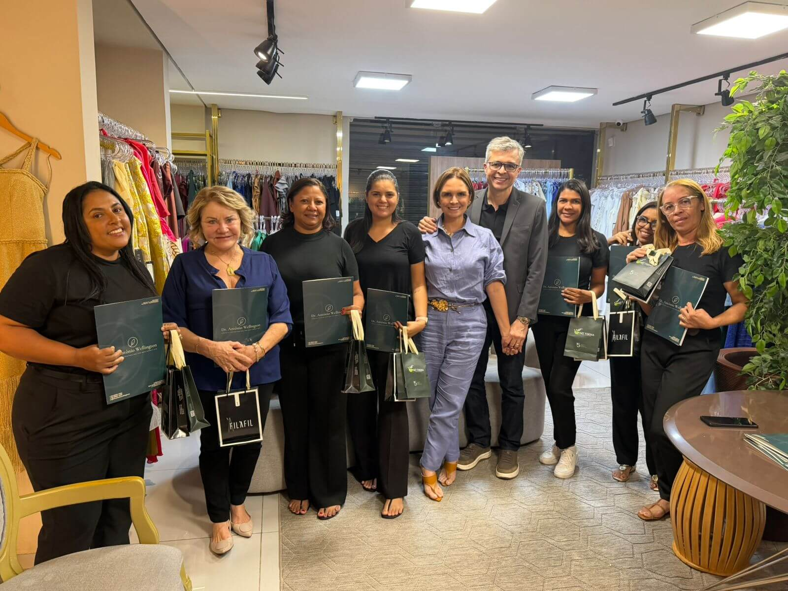
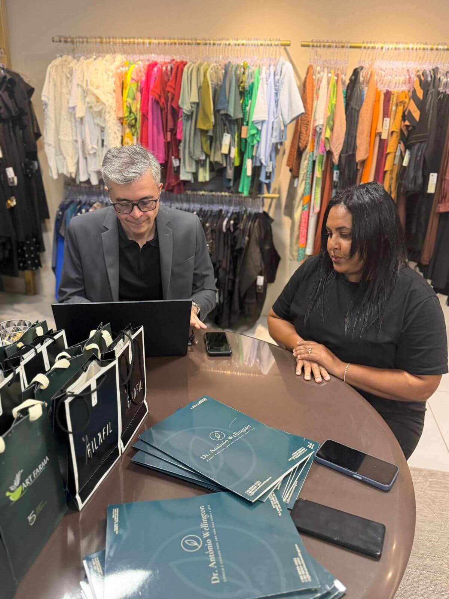
01 / 09Sou o Dr. Antônio Wellington, médico formado pela Universidade Federal do Maranhão — UFMA — com mais de 24 anos de experiência em medicina humanizada, dedicada à saúde integral de cada paciente.
Construí minha trajetória em duas residências com RQE — Cirurgia Geral e Terapia Intensiva — e atuo também como endoscopista, o que amplia a visão clínica e a segurança no cuidado completo do paciente.
Hoje, com foco em emagrecimento e longevidade, meu trabalho vai muito além da perda de peso: promovo saúde, disposição, equilíbrio, autoestima, qualidade de vida e hábitos sustentáveis — sempre de forma individualizada e baseada em evidência científica.
Complemento essa atuação com duas pós-graduações MBA pela PUCRS: em Finanças, Investimentos e Banking, e em Gestão, Inovação e Serviços em Saúde — uma formação multidisciplinar que sustenta uma medicina moderna, estratégica e atualizada.
Investigação metabólica completa, plano terapêutico individualizado e — quando indicado — uso criterioso de medicações modernas (incluindo GLP-1). Resultado durável, sem efeito sanfona.
Cuidado integral focado em mais anos com saúde: disposição, sono, composição corporal, marcadores inflamatórios e prevenção.
Pré-diabetes, diabetes tipo 2, dislipidemia, hipertensão, esteatose hepática e síndrome metabólica — manejo integrado em busca de remissão.
Residência médica com RQE 1023. Avaliação cirúrgica, segundas opiniões e cuidado pré e pós-operatório com olhar clínico completo.
Residência médica com RQE 5828. Experiência hospitalar de alta complexidade que sustenta raciocínio clínico e visão sistêmica.
Atuação como endoscopista, somando à clínica do emagrecimento a investigação direta do trato gastrointestinal — quando indicada.
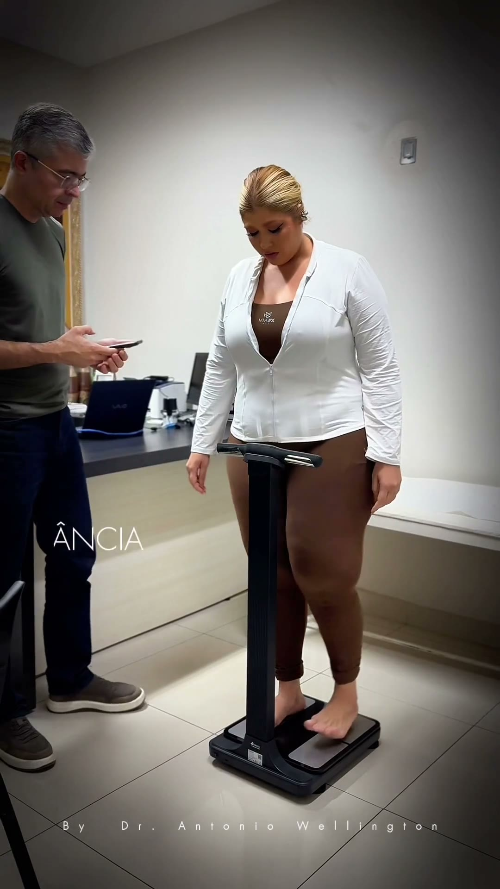
Bioimpedância & método · 9:16Mesmo a distância, o cuidado mantém a profundidade da consulta presencial — exames, plano alimentar e ajustes de rotina conduzidos pessoalmente.
Atendimento online com cuidado, precisão e atenção individualizada — para pacientes em Teresina, em qualquer cidade do país ou no exterior.
Telemedicina conduzida dentro das normas do CFM — prescrição digital assinada, prontuário sigiloso e plataforma criptografada.
A consultoria é um acompanhamento individualizado para pessoas que querem cuidar da saúde com seriedade. Cada paciente passa por uma avaliação completa — rotina, exames, histórico clínico, objetivos e necessidades específicas.
O acompanhamento padrão tem duração inicial de três a seis meses, com retornos quinzenais a mensais, suporte assíncrono entre consultas e revisão completa de exames laboratoriais e composição corporal.
90 minutos para entender histórico médico, estilo de vida, exames anteriores, medicações, sintomas, rotina, contexto emocional e relação com a comida. Sem pressa, sem balança como protagonista.
Construção do plano terapêutico com base em evidência clínica, exames laboratoriais e — quando necessário — uso criterioso de medicações modernas. Nada que você não vá conseguir manter.
Ajuste fino do plano, suporte ativo no WhatsApp, revisão de exames e desenvolvimento de habilidades práticas: compras, preparo, movimento, sono e gestão do estresse.
Espaçamento gradual das consultas, consolidação dos hábitos e construção de uma relação tranquila com o corpo e com a comida — para a vida toda.
Cheguei no Dr. Antônio exausto de dietas que nunca duravam. Em seis meses perdi 14 kg, normalizei a glicemia e — pela primeira vez — parei de pensar em comida o tempo todo.
O acompanhamento foi impecável. Saí da pré-diabetes, recuperei energia, dormi melhor e voltei a praticar esporte. Indico de olhos fechados.
O atendimento presencial é feito no UltraX — Rua Anísio de Abreu, 596, Centro Sul, Teresina/PI, no segundo andar. É um espaço moderno, preparado para oferecer conforto, acolhimento e excelência no atendimento.
Sim. Atendo presencialmente em Teresina (PI) e online por videochamada para o Brasil inteiro e brasileiros no exterior — consultas autorizadas pelo CFM. A estrutura, exames e suporte são exatamente os mesmos.
Quando há indicação clínica clara — IMC elevado, comorbidades, falha de tratamento conservador — uso essas medicações de forma criteriosa, dentro do contexto de um plano completo. Medicação não substitui acompanhamento; potencializa um cuidado bem feito.
Solicito o que tem indicação clínica clara para o seu caso. Para pacientes em investigação metabólica ou hormonal, costumo trabalhar com painel ampliado discutido caso a caso, sempre buscando o que é coberto pelo convênio quando possível.
Resultados subjetivos (energia, sono, apetite, ansiedade com comida) costumam aparecer entre 3 e 6 semanas. Mudanças laboratoriais e de composição corporal pedem 90 a 180 dias. Resultado durável é resultado lento — e isso é uma boa notícia.
Pacientes ativos têm um canal direto comigo no WhatsApp para dúvidas pontuais durante a semana, com tempo de resposta de até 24h em dias úteis. Não substitui consulta, mas garante que você não fique travado em decisões do dia a dia.
Se você sente que chegou a hora de cuidar disso com seriedade, eu estou aqui. Mande uma mensagem agora — respondo pessoalmente, sem secretária, sem robô.